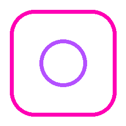
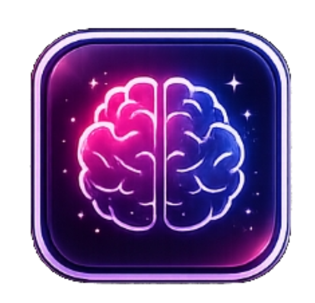
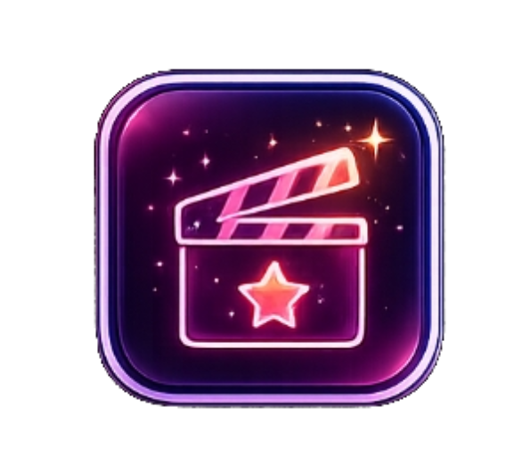
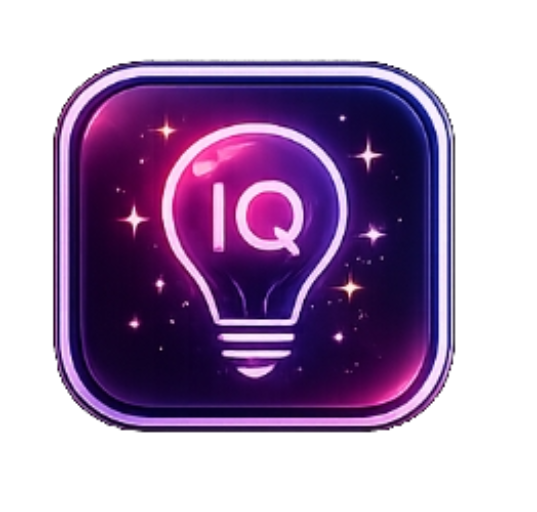
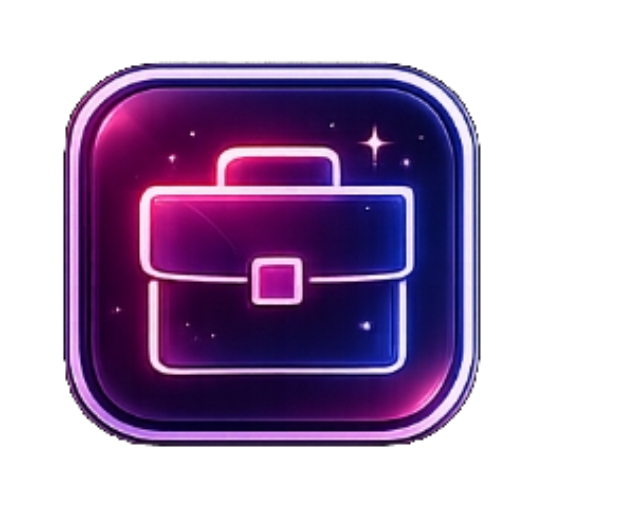

Tüm Testler
30 testin tamamı burada. Testler sekmesi artık tek bir kategoriye değil tüm testlere gider.

Flört Tarzın
Aşk enerjini ve yaklaşım tarzını öğren.
Aşk Uyumun
İlişkide uyum dilini ve beklentilerini keşfet.
Ruh Eşin Nerede?
Sana en uygun bağ kurma tipini bul.
Kıskançlık Seviyen
Kıskançlık reflekslerini ölç.
İlişkide Sen Kimsin?
Aşk ilişkisindeki gerçek rolünü gör.

Gizli Karakterin
İçindeki baskın karakter tipini keşfet.
Karanlık Tarafın
Bastırdığın güçlü yönleri gör.
İnsanlar Seni Nasıl Görüyor?
Dışarıdan nasıl algılandığını öğren.
Duygusal Zekan
Duygu okuma ve yönetme gücünü ölç.
İç Dünyan Nasıl?
Zihninin ve kalbinin ritmini keşfet.

Hangi Şehir Ruhun?
Enerjine benzeyen şehir havasını bul.
Hangi Film Karakterisin?
Sinematik karakter enerjini öğren.
Enerjin Ne Renk?
İç enerjinin rengini keşfet.
Bugünkü Modun
Bugünkü ruh halinin mini haritası.
Sosyal Ortam Testi
Kalabalıktaki sahne ışığını ölç.
Sosyal Zekan
İnsanları çözme yeteneğini ölç.
Arkadaşlık Enerjin
Nasıl bir dost olduğunu öğren.
İnsan Okuma Gücün
Davranışlardan anlam çıkarma gücün.
Kalabalıkta Rolün
Ortam içindeki doğal rolünü bul.
Güvenilir Misin?
İnsanlara verdiğin güven hissini ölç.

Zeka Tarzın
Mantık, sezgi ve yaratıcılık dengen.
Mantık Gücün
Analitik karar alma gücünü ölç.
Hızlı Düşünme
Baskı altında zihnin nasıl çalışıyor?
Stratejik Zeka
Plan, risk ve hamle gücünü ölç.
Sezgi mi Mantık mı?
Kararlarında hangi taraf baskın?

Hangi Meslek Sana Uygun?
İş hayatındaki doğal yönünü bul.
Liderlik Potansiyelin
Yönetme ve yön verme gücünü ölç.
Para Kazanma Tarzın
Kazanç üretme karakterini keşfet.
Girişimci Ruhun
Risk alma ve kurma potansiyelin.
Gelecekte Nasıl Biri Olacaksın?
Gelecek karakter projeksiyonun.